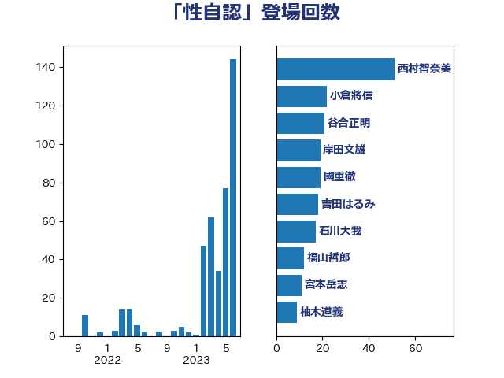

単語「性自認」

| 西村智奈美 | 立憲民主党 | 51 回 |
| 小倉將信 | 自由民主党 | 22 回 |
| 谷合正明 | 公明党 | 21 回 |
| 岸田文雄 | 自由民主党 | 19 回 |
| 國重徹 | 公明党 | 19 回 |
| 吉田はるみ | 立憲民主党 | 18 回 |
| 石川大我 | 立憲民主党 | 17 回 |
| 福山哲郎 | 立憲民主党 | 12 回 |
| 宮本岳志 | 日本共産党 | 11 回 |
| 柚木道義 | 立憲民主党 | 9 回 |
| 斎藤アレックス | 国民民主党 | 8 回 |
| 加藤勝信 | 自由民主党 | 8 回 |
| 松野博一 | 自由民主党 | 6 回 |
| 新藤義孝 | 自由民主党 | 6 回 |
| 打越さく良 | 立憲民主党 | 6 回 |
| 阿部弘樹 | 日本維新の会 | 5 回 |
| 自見はなこ | 自由民主党 | 5 回 |
| 緒方林太郎 | 無所属 | 5 回 |
| 山岸一生 | 立憲民主党 | 5 回 |
| 齋藤健 | 自由民主党 | 4 回 |
| 阿部司 | 日本維新の会 | 4 回 |
| 野田聖子 | 自由民主党 | 4 回 |
| 細田博之 | 自由民主党 | 4 回 |
| 林芳正 | 自由民主党 | 4 回 |
| 末松信介 | 自由民主党 | 4 回 |
| 山口俊一 | 自由民主党 | 4 回 |
| 大西英男 | 自由民主党 | 4 回 |
| 大石あきこ | れいわ新選組 | 4 回 |
| 塩川鉄也 | 日本共産党 | 4 回 |
| 中谷一馬 | 立憲民主党 | 4 回 |
| 鰐淵洋子 | 公明党 | 3 回 |
| 高市早苗 | 自由民主党 | 3 回 |
| 田村智子 | 日本共産党 | 3 回 |
| 鬼木誠 | 立憲民主党 | 2 回 |
| 高木かおり | 日本維新の会 | 2 回 |
| 辻元清美 | 立憲民主党 | 2 回 |
| 若宮健嗣 | 自由民主党 | 2 回 |
| 福島みずほ | 社会民主党 | 2 回 |
| 田村貴昭 | 日本共産党 | 2 回 |
| 浜田靖一 | 自由民主党 | 2 回 |
| 木村英子 | れいわ新選組 | 2 回 |
| 岩谷良平 | 日本維新の会 | 2 回 |
| 山田賢司 | 自由民主党 | 2 回 |
| 堀場幸子 | 日本維新の会 | 2 回 |
| 吉田久美子 | 公明党 | 2 回 |
| 仁比聡平 | 日本共産党 | 2 回 |
| 上野賢一郎 | 自由民主党 | 2 回 |
| 三浦信祐 | 公明党 | 2 回 |
| 高階恵美子 | 自由民主党 | 1 回 |
| 音喜多駿 | 日本維新の会 | 1 回 |
| 青山大人 | 立憲民主党 | 1 回 |
| 鎌田さゆり | 立憲民主党 | 1 回 |
| 鈴木俊一 | 自由民主党 | 1 回 |
| 西村康稔 | 自由民主党 | 1 回 |
| 荒井優 | 立憲民主党 | 1 回 |
| 舩後靖彦 | れいわ新選組 | 1 回 |
| 神田憲次 | 自由民主党 | 1 回 |
| 磯崎仁彦 | 自由民主党 | 1 回 |
| 石川香織 | 立憲民主党 | 1 回 |
| 田名部匡代 | 立憲民主党 | 1 回 |
| 浦野靖人 | 日本維新の会 | 1 回 |
| 泉健太 | 立憲民主党 | 1 回 |
| 河西宏一 | 公明党 | 1 回 |
| 枝野幸男 | 立憲民主党 | 1 回 |
| 松本剛明 | 自由民主党 | 1 回 |
| 日下正喜 | 公明党 | 1 回 |
| 平木大作 | 公明党 | 1 回 |
| 岸真紀子 | 立憲民主党 | 1 回 |
| 山谷えり子 | 自由民主党 | 1 回 |
| 山口那津男 | 公明党 | 1 回 |
| 古賀友一郎 | 自由民主党 | 1 回 |